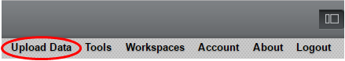
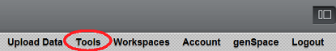

You can upload data files for analysis/visualization by clicking on the "Upload Data" menu item:

Uploaded data files appear as dataset nodes under the Workspace Area of the user interface. Results produced by analyzing a dataset appear as sub-nodes under the dataset:
Using the mouse to select a dataset node in the Workspace Area will result in the display of all analysis and visualization modules available for this type of data (different modules are available for different data types):

To view all available modules (regardless of data type), click on the "Tools" menu item:

Analyses of gene expression microarray data often utilize only a subset of the available samples (or "arrays") and probe sets (or "markers"). Similarly, the results of some analyses may take the form of groups or arrays or markers (e.g., "Differential Expression (T-test)" analysis produces a set that includes the markers which are significantly differentially expressed between two sets of arrays). Groupings of markers and arrays can be managed in the "Set View" pane of the Workspace Area. The use of "contexts" allows the definitions of multiple collections of marker/array sets (array sets are called "phenotypes"):